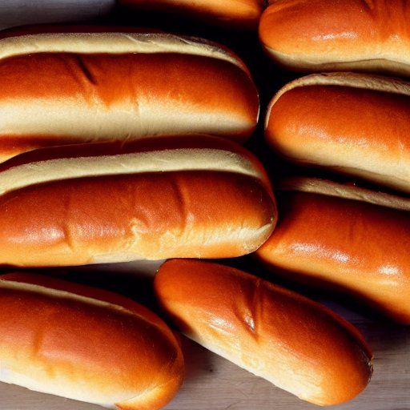

Pain à hotdog
Préparation: —
Cuisson: 10 minutes
Total: —
Ingrédients
-
1 œuf

-
3 c. à thé de levure sèche active
-
1 c. à thé de sel
-
1 t d'eau
-
1/3 t de huile
-
1/4 t de sucre
-
3 1/2 t de farine
Instructions
Ajouter dans le contenant de la machine à pain :
- 1 œuf
- 3 c. à thé de levure sèche active
- 1 c. à thé de sel
- 1 t d'eau
- 1/3 t de huile
- 1/4 t de sucre
- 3 1/2 t de farine
Démarrer la machine au mode pétrissage.
Façonner 10 à 12 pains et déposer sur une plaque.
Cuire au four préchauffé à 220 °C (425 °F) pendant 10 minutes.